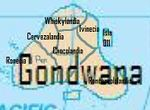

De: La Frikipedia, la enciclopedia extremadamente seria.
De: La Frikipedia, la enciclopedia extremadamente seria. De: La Frikipedia, la enciclopedia extremadamente seria.
.jpg/150px-muerto_3(2).jpg)
|
Muerto
El autor de este artículo, al parecer, se ha ido a una de sus citas al WC y suponemos que murió como el desdichado de aquí a la izquierda. Así que en su memoria, no seas cabrón, ponle más chorradas al artículo. |
| De la serie Países del planeta tierra: | |||||
| Gondwana | |||||
|---|---|---|---|---|---|
| |||||
| Lema: "Volo edere de Gondwana thynnus" (latin) | |||||
| Himno: La Salsanesa
| |||||
| 
| |||||
| Capital | {{{capital}}} | ||||
| Mayor ciudad | Ronconcolalandia | ||||
| Lenguas oficiales | Etruscoromano, Inglespañol, Español, Latinamericano | ||||
| Gobierno | Democracia - Tiranica | ||||
| Prisidente Religioso | Dios | ||||
| Área | 132434535 millones de Cm2 | ||||
| Población | 25445 personas + 143454543e4 animales (que hace esa "e") | ||||
| Moneda | Peso | ||||
| Zona horaria | -12243 grados kelvin | ||||
| Dominio Internet | 100% | ||||
| Código telefónico | Pi
| ||||
| Son todos corruptos | |||||
Gondwana es un país muy poco conocido, se conose por sus locos casos de Canibalismo, récord Winnes y otras pendejadas
Gondwana se ubicaba cerca de Lauracia (conosido como Rusacia o Europacia hace como 10878947892 años), luego de algunas caídas y tropiezos de dinosaurios colosales, la tierra se separo y la llevaron hacia el océano pacifista, donde fue atendito por Sirenas y perros de mar.
En Gondwana hay aproximadamente 5 ciudades, Ivinecia, Ronvinecia, Cervenecia, Whiskynecia, Ronconcolanecia y Chocolandia (espera... 1, 2, 3, 4, 5,.... lol) Bueno, con la reforma de penciones y pendejadas se creo otra, dominada bajo el regimen satanico de Willy Wonka
Poseen una religión frikista, creen en Chuck Norris y los santos escangelios, junto con la gran y monstruoso espagueti volador (conosido como Dios)
Creen que Dios los toco con su majestuoso y brillante tentaculo de espagueti, donde cayo un majestuoso y "Pacifico" torbellino que "llevo a su majestuoso palacio" a como 5.000 perritos, 1023 peces y 3634482947 humanoides nativos.
Tienen 3 iglesias, la de Saint-Pierre August of Malawaliska, la de Demonius Paitrus y la de Walalalalailitus. Su santisimo y gey pontifice es Raul Carademelon SaqueBleu, conosido como el Cura de Gondwana, hace rituales con "Incienso" de las "legales" y "no enfermantes" plantas de Gondwana Tienen 6 fiestas religiosas principales:
(espera otra vez... si mi profesora de matematicas me viera...)
Cuando cayo un meteorito de proporciones gigantescas en Gondwana, los microbios dentro del meteorito evolucionaron asta transformarse en seres humanos, (primero bacterias,luego mierda y despues humanos: "teoria de la evolucion de Edarcox")
Su primer lider fue Tesakatumoko Tashida Tesuna (o yes, Japones), fue derrocado por otro Sub lider llamado Ivanovich Traserovich Junivich (o oui, Ruso), que susesivamente fue derrocado por Pepe Peperoni de las Montealvas (o chintrolas, mexicano) que seguidamente fue derrocado por Filipo IV de España, conosido como Carlos Andres Montecinos de las Carmelas (Español)...
....................................................................................................
................................................................................................................................ .. .. luego de muchos presidentes corruptos y lideres extrqangeros, los pobres seres sub desarrollados llamados los atunes de Gondwana, decidieron derrocar al ultimo Lider, Diox, cambiandolo por Dios, los nativos aceptaron y conservaron su culto.
Actualmente sigue siendo corrupto, sus exportaciones son el Atun Gondwanes y la mmm... Marilaguana, Concaina y mas Drossssgaaas.
Autor(es):